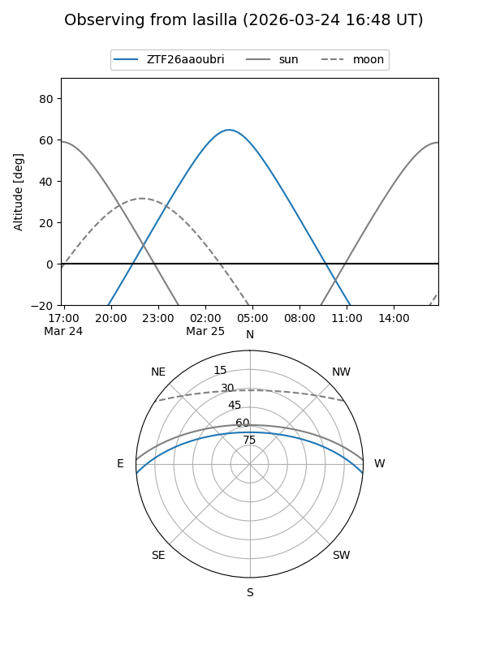
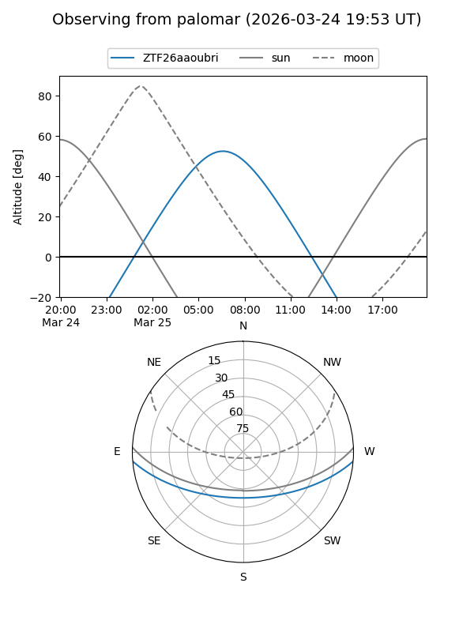

ZTF26aaoubri
Target ZTF26aaoubri at 2026-03-25 07:43
Aliases and brokers:
FINK: link
Lasair: link
ALeRCE: link
alt names
ZTF26aaoubri (ztf,fink_ztf)
Coordinates:
equatorial (ra, dec) = 164.3541,-3.95743
equatorial (HMS+DMS) = 10:57:24.98,-03:57:26.76
galactic (l, b) = (257.0193,+48.48327)
Flags:
Photometry:
last ztfg=17.39, ztfr=16.88
1 ztfg, 1 ztfr detections
Lightcurve
Visibility


Additional plots